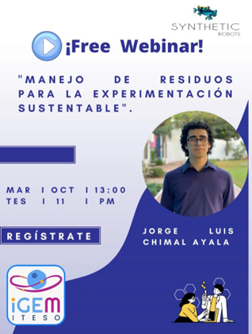

Comunication

The communication was a challenge since we wanted to have accessible information to all kinds of people and professions, making it attractive to those who don't necessarily do science. First, we made videos with a narrative that doesn´t need to be a scientific to understand it, so that people could empathise with our project. We tried to join two sectors, the agronomical and the biotechnological one.
In our country we have a big industry in agronomy but, as we learned by assisting to conferences like “The importance of young people in the agro world” by Adrián Durán, most people involved are over 40 years old and there isn´t much interest from our country’s youth. We tried to twist this situation and make it attractive to Gen Z because agronomy is very important (thanks to it we can eat!), so by giving it the right communication, we will hopefully inspire more young people in this important sector, which has lots of opportunity areas in biotechnology.
Podcast SYN sentido

The creation of our podcast stems from the need to spread science to society, to look for ways to reach more people in a simple way. The podcast of our team is called "SYN Sentido" indicates that learning and education is not one-sided, can be shared in all directions and that science must be inclusive; “SYN” stands for Synthetic and “sentido” meaning sense in Spanish, our native language.
The creation of our podcast stems from the need to spread science to society, to look for ways to reach more people in a simple way. The podcast of our team is called "SYN Sentido" indicates that learning and education is not one-sided, can be shared in all directions and that science must be inclusive; “SYN” stands for Synthetic and “sentido” meaning sense in Spanish, our native language.

We have topics where controversial issues for society are shared, like the water scarcity problems in Mexico. We also talked about the day-to-day life of scientists, how it is to practice a scientific career in Mexico and what happens after finishing the university. The visibility of women in science is a topic of great importance, so we also dedicated two episodes to talk about our experience, recognize outstanding women scientists and motivate society to make a more inclusive scientific world for women.
The iGEM competence is so important at an international and personal level that as team members we dedicated a whole episode to explain in detail to the audience what iGEM is, motivating them to learn Synthetic Biology and to get deeper into the world of iGEM.
Guests were a very important part of SYN Sentido. We decided to invite two professional scientists, Omar Sarah Ratkovich, who is also our PI. They told us about their trajectory and vision in the field of scientific research and teaching. Furthermore, we shared our interview with Jhovany Gómez, an agronomical engineer that works at berry crops in Jalisco, who told us more about the actual problems that they’re having. Additionally, we also collaborated with team iGEM Patras, iGEM UiOslo and iGEM REC-CHENNAI.
Also, 50% of our audience believe that listening to more than half of SYN Sentido’s episodes has helped them better spread science and agree in that they learn something that can be applied in their daily lives.
SYN Sentido is about to complete its first season, the entire audience agrees that we share interesting content, 62.5% consider informative and very relevant the content of the episodes and it was commented that the dialogue format is interesting, and that the duration of each chapter is adequate.
Our podcast can be found on the playlists of young students, adult workers, parents, and university professors, along with other similar podcasts, such as Mándarax and Scibits. To listen to the whole season, you can visit our Spotify or watch our last episodes on our YouTube channel.
Social Media Dynamics

In order to achieve our communication goals, we made posts of our team and the stakeholders involved in our project. Our principal platform to post was Instagram because our target is mostly on that social media, getting posts with up to 12.3 K likes.
We also made relationships with businesses and with social media influencers like Adrián Durán, also known as @soytuamigoagricultor, to promote our project.
We also made a series of posts about daily life science and organized online events like “Family with iGEM ITESO”, where we interacted with other students at our university and heard their points of view about our project, which helped us open our perspective about possible solutions.
Induction courses Vive ITESO 2022 Be Real

Each semester, at our university, an event is held to publicize the facilities to future students, as well as giving a taste of the university experience to high school students through undergraduate and engineering activities taught by ITESO professors. We had the opportunity as a team to give a series of lectures and a dialogue with prospects to Biotechnology Engineering students, to share our experience so far in the competition, the applications and scope that can have the knowledge acquired in the race, as well as to let them know our project BerryVax and tell them a little about some projects of different iGEM projects.
Free webinar: Waste management for sustainable experimentation
We gave a conference called “Waste management for sustainable experimentation” in a free webinar organized by team Synthetic Biobots, whom which we participated with in iGEM Design League last year. In this free and accessible talk, touched topics like how to innovate and experiment sustainably, considering microorganism and reactants management and its appropriate disposal to reduce the experiment’s environmental impact.